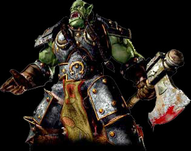

Forums galactiques > Taverne galactique : lieu de discussion informel > Exodus the life...
1 semaine | 36 | |
2 semaines | 6 | |
3 semaines | 5 | |
Jamais, Black Bird est trop nul | 9 | |
Exodus t'es le meilleur | 8 | |
Total : 64 vote(s) | ||
Pages : 1 2
| Exodus Réputation à la taverne : 238  07/07 ETU 23:22 | Score : 1 Détails "je trouve que j'ai payé trés chère pour un meurtrié"
J'ai tué personne... | ||
| anonymations Réputation à la taverne : 159  07/07 ETU 23:24 | Score : 0 Détails Si, votre fierté, enfin si un orc en a une bien sur.
| ||
| Exodus Réputation à la taverne : 238 07/07 ETU 23:29 | Score : 4 Détails Sachez que moi !
Je suis fier d'affronter Black Bird, et que vous, vous devriez avoir honte de vous foutre de ma gueule, en laissant Black Bird m'attaquer ! | ||
| KiaX Réputation à la taverne : 178  07/07 ETU 23:35 | Score : 4 Détails C'est pas faux !
Black Bird est un sacré ennemis ... vous vous êtes pas attaqué à la bonne personne, c'est pour celà que l'on dit que vous n'allez pas tenir plus d'une semaine .... Enfin bon, vous êtes seul responsable de vos actes .... peut-être n'est ce pas totalement .... fini ..... vous pouvez abandonné et votre sort sera entre les mains de BlackBird ... Et dans le pire des cas sa sanction sera . . . . . . . . . . . . . . . . . je pense de vous faire boire des litres et des litres de jus d'annanas ... Et dans ce cas vous avez raisons de continuer !! Courage Exodus !! Si tu pouvais aussi détruire ces stocks .... ça serait sympa ... | ||
| Eolead Réputation à la taverne : 116  08/07 ETU 00:30 | Score : 2 Détails Je suis pour qu'on les laisse se battre à la loyale, les yeux dans les yeux. Néanmoins, il faut reconnaitre à Exodus qu'il est courageux de maintenir sa position contre Black Bird alors qu'il part perdant selon toutes statistiques et que plus de la moitié de la Galaxie se moque ouvertement de lui.
Je salue donc ici la témérité d'Exodus et je ne peux lui souhaiter que bonne chance car il n'y que la chance qui puisse le sauver à mon humble avis ... | ||
| anonymations Réputation à la taverne : 159 08/07 ETU 00:43 | Score : 1 Détails Exodus, moi je n'est rien fait à black bird, et je n'est pas honte de "me foutre de votre gueule". Vous vous êtes mi dans ce pétrin seul, et vous en sortirez seul, en tout cas sans mon aide.
| ||
| Adario Réputation à la taverne : 142  08/07 ETU 01:04 | Score : 3 Détails Non d'un calamar mal plumer!
Plumer? J'ai dit plumer? Exodus n'est pas seul puisque j'ai décider de soutenir les Orcs^^ De quel manière, je ne le sait pas encore. Mais je ne puis rester les bras croiser alors que mon ami subi des tirs hyper atomique! Bref, je vous laisse assister confortablement à la destruction d'un empire (de manière plus ou moins partiel) depuis vos Xcoms. | ||
| Exodus Réputation à la taverne : 238 08/07 ETU 11:08 | Score : 2 Détails Anonymations...
Je tiens à te rappeler que Black Bird ne ma pas entièrement tuer(il en est encore loin), et que je connais tes positions, et je n'hésiterais pas, à te massacrer si tu continues... Tu fais honte à Black Bird... tu fais honte à la galaxie... | ||
| Barbarus Réputation à la taverne : 0  10/07 ETU 11:10 | Score : 1 Détails Vive les Orcs
| ||
| Dark Ezeckiel Réputation à la taverne : 776  10/07 ETU 11:37 | Score : 5 Détails ...Et gloire au jus d'ananas...
Quoi,quoi? Moi aussi j'avais envie de dire un truc utile... | ||
| Essai Réputation à la taverne : 389  10/07 ETU 14:09  | Score : 3 Détails Il s'est fait avoir à son propre piège le petit Exodus, bien fait !
| ||
| Eolead Réputation à la taverne : 116 11/07 ETU 03:22 | Score : 3 Détails
C'est mesquin Essai ... Piétiner mollement un orc à terre ... C'est mesquin mais j'avoue que ça doit être relativement jouissif. |
Pages : 1 2
Forums galactiques > Taverne galactique : lieu de discussion informel > Exodus the life...